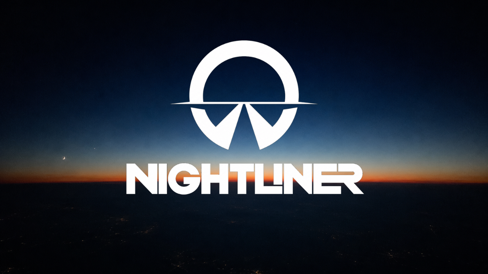

Recorded between shifts.
Ableton Live 11 · Push 2 · Roland S‑1.
Two transmissions out now.
Nights, and early mornings, I drive a bus.
Off the clock, I drive the sound.
The name comes from the job: night-shift coach driver, hours spent fixing on the white line while the city sleeps. Music has always run in parallel — techno and minimal, produced since the early 2010s, until a pause in 2012.
Nightliner is that pause coming to an end. The project is back on the road with new gear and a slower, more deliberate way of building tracks: less speed, more distance.
Two tracks are already out on the road. More are in the works. No album announced yet — for now, just the journey.
Two transmissions, live from the road. More on the way.
The first transmissions are already out. More are on the way — follow along for what's next.